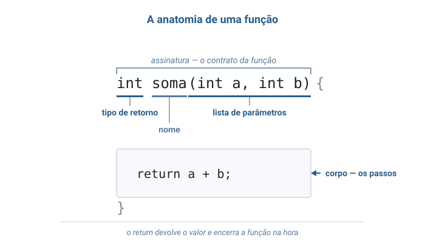
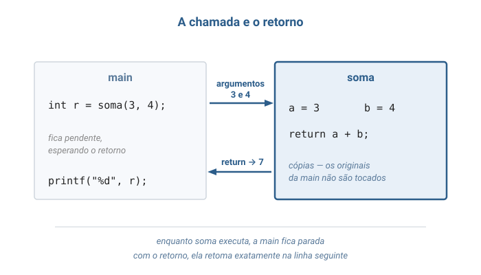
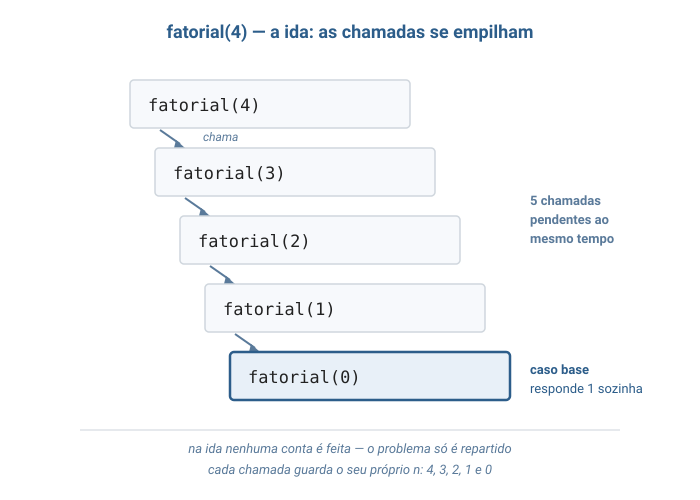
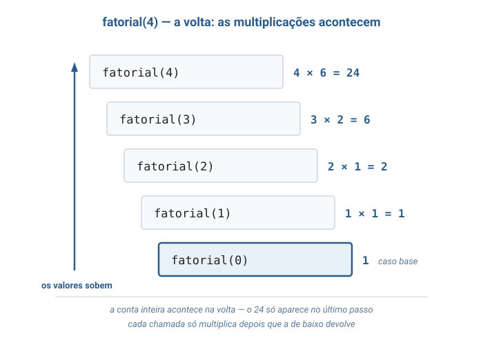
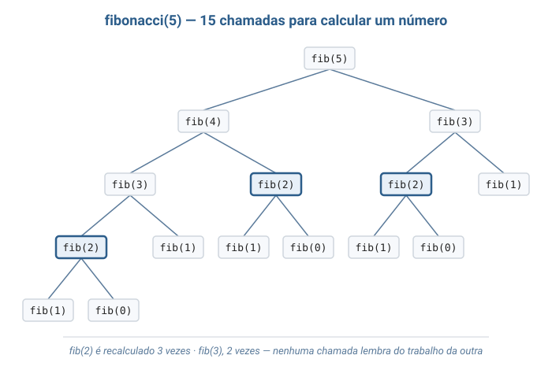

Algoritmos e Estruturas de dados
Unirios
Aula 03
Funções e Recursão
Delegar uma tarefa · delegar a si mesmo
Aula conceitual — o que uma função é por dentro, e o que acontece quando ela chama a si mesma.
Camada 1
Você não organiza a festa sozinho
Você pede a alguém que cuide da comida. Diz o que precisa, recebe o que pediu — e não acompanha como foi feito. Enquanto isso, você espera.
E se a tarefa for grande demais, quem recebeu reparte: pede a alguém o jantar de vinte. Que reparte de novo.
Camada 2
Isso tem nome: função
Uma função (function) é um bloco de código com nome próprio: recebe valores de entrada, executa passos e devolve um valor de saída.
Em C, tudo é função — inclusive a main.
A literatura também usa sub-rotina, subprograma e procedimento para a mesma ideia.
Quatro palavras dão conta de qualquer função
Esse é o vocabulário para falar de função sem ambiguidade.
- Assinatura — tipo de retorno, nome e parâmetros.
- Corpo — os passos, entre chaves.
- Chamada — o ponto onde a função é acionada.
- Retorno — o valor devolvido a quem chamou.
Sem valor a devolver? O tipo de retorno é void — "nada", em C.
E se a função chamar a si mesma?
Nada proíbe. Uma função recursiva chama a si mesma sobre uma entrada menor — e se organiza em dois casos:
- Caso base — entrada tão pequena que a resposta sai direto.
- Caso recursivo — reduz o problema e delega o resto a si mesma.
O que uma função não é
Três mal-entendidos que vale desarmar já:
- Não é atalho de escrita — é um contrato: dados estes parâmetros, este resultado.
- Não guarda estado — cada chamada nasce e morre nela mesma.
- Não enxerga as variáveis de quem chamou.

Turma, esta aula tem duas fontes principais. Schildt trata a função como recurso da linguagem C — assinatura, protótipo, escopo. Backes trata a recursividade como técnica de algoritmo, com fatorial e Fibonacci. São os dois olhares que vamos juntar hoje. Schildt, capítulo de funções · Backes, capítulo de recursividade
Camada 3
Por que não deixar tudo dentro da main?
Um programa funciona igual com tudo dentro da main.
Três razões justificam separar mesmo assim:
- Nomear —
busca_binaria(v, 8, 55)diz o que faz. O laço não diz. - Reusar — sem função, seriam quatro cópias do mesmo laço.
- Isolar — o defeito mora em 12 linhas, não em 300.
Abstração — usar sem saber como funciona
Quem chama busca_binaria precisa saber o que ela devolve —
nunca como ela faz por dentro. Essa separação tem nome:
abstração.
É assim que um algoritmo grande é construído a partir de algoritmos pequenos.
A anatomia, peça por peça
Toda função em C tem a mesma forma. Repare nas três partes da primeira linha — juntas, elas são a assinatura.
/* assinatura: tipo de retorno, nome e lista de parametros */
int soma(int a, int b) {
/* corpo: os passos */
return a + b;
}
Quem chama precisa conhecer só a assinatura — nunca o corpo.
O return faz duas coisas
Ele devolve um único valor — e encerra a função na hora.
É por isso que uma busca pode dar return i de dentro
do for: achou, acabou,
o laço nem termina.
Parâmetro e argumento não são a mesma coisa
A distinção parece formalidade — até perguntarmos o que exatamente viaja de um para o outro.
- Parâmetro — o nome declarado na assinatura:
a,b. - Argumento — o valor entregue na chamada:
3,4.
O que viaja é uma cópia
Em C, o parâmetro é uma variável nova, iniciada com o valor do argumento. Mexer nela não toca no original — chama-se passagem por valor.
void dobrar(int x) {
x = x * 2; /* altera a copia local, e so ela */
}
int n = 10;
dobrar(n);
printf("%d", n); /* imprime 10, nao 20 */
Cada função tem suas próprias variáveis
Parâmetros e variáveis declaradas no corpo são variáveis locais. O trecho onde um nome existe é o seu escopo — e ele acaba na chave da função.
Por isso o i de busca_linear e o i de
montar_tabela são variáveis diferentes.
Então por que o vetor muda?
Uma função que recebe um vetor e escreve nele altera o vetor de quem chamou. A regra não foi quebrada: um vetor é uma fileira de posições vizinhas na memória, e o que veio por cópia foi só onde a fileira começa.
Valores simples são copiados. Vetores, não.
Guardar e manipular endereços de forma explícita é o que se chama trabalhar com ponteiros.
Fatorial: o problema contém a si mesmo
Com a mecânica da chamada na mão, voltemos à função que chama a si mesma.
4! = 4 × 3 × 2 × 1 = 24 — mas 3 × 2 × 1 é
exatamente 3!.
4! = 4 × 3!
Dentro do problema mora uma versão menor dele mesmo. É disso que a recursão vive.
O fatorial em seis linhas
Os dois casos da Camada 2 aparecem literalmente, um em cada
return.
int fatorial(int n) {
/* caso base: 0! vale 1 */
if (n == 0) {
return 1;
}
/* caso recursivo: n! = n x (n-1)! */
return n * fatorial(n - 1);
}
Duas obrigações — nenhuma opcional
Sem qualquer uma das duas, a função não termina:
- Ter caso base — alguma entrada respondida sem nova chamada.
- Progredir — cada chamada recebe entrada mais perto do caso base.
Falhar produz recursão infinita: chamadas se acumulam ocupando memória até o programa ser interrompido.
A chamada não desaparece — ela espera
Quando uma função chama outra, a primeira fica pendente: guarda seus parâmetros e o ponto exato onde parou, à espera do retorno.
A cadeia de chamadas à espera é a pilha de chamadas. Quantas estão esperando é a profundidade da recursão.
"Pilha" aqui é o nome dessa cadeia à espera: a última a chegar é a primeira a resolver.
As contas acontecem na volta
Na ida, o algoritmo só reparte. A primeira multiplicação só ocorre depois que o caso base responde.
ida — so reparte o problema, nenhuma conta e feita
fatorial(4) → fatorial(3) → fatorial(2) → fatorial(1) → fatorial(0)
volta — agora cada chamada multiplica
24 ← 6 ← 2 ← 1 ← 1
Existem cinco variáveis n vivas ao mesmo tempo: 4, 3, 2, 1 e 0.
Turma, aquela mensagem de erro stack overflow que vocês já viram é exatamente esta pilha estourando. Recursão sem caso base — ou com caso base que nunca é alcançado — empilha chamadas até acabar a memória reservada para elas. O nome do site mais famoso de programação vem daí.
Fibonacci — a mesma ideia, dois ramos
Cada termo é a soma dos dois anteriores: 0, 1, 1, 2, 3, 5, 8, 13… Agora são dois casos base e duas chamadas.
int fibonacci(int n) {
/* dois casos base */
if (n == 0) { return 0; }
if (n == 1) { return 1; }
/* caso recursivo: duas chamadas, nao uma */
return fibonacci(n - 1) + fibonacci(n - 2);
}
A função está correta. O problema é outro — e aparece no próximo slide.
Corrente contra árvore
No fatorial, cada chamada gera uma — uma corrente. No Fibonacci, cada chamada gera duas — uma árvore que dobra de largura a cada nível.
Pior: a árvore recalcula. Emfibonacci(5), o termofib(2)é computado do zero três vezes.
Camada 4
A função da matemática e a da programação
Em matemática, uma função associa a cada entrada exatamente uma saída.
A função da programação foi batizada por analogia — e
fatorial(4) = 24 tem o mesmo sentido nos dois mundos.
Só que a analogia não fecha: em C, a função pode fazer coisas além de devolver seu valor.
Efeito colateral e função pura
Imprimir na tela, alterar um vetor recebido — qualquer coisa observável fora do retorno é um efeito colateral.
Sem nenhum deles, e devolvendo sempre o mesmo para os mesmos argumentos,
a função é pura. fatorial é;
uma função que imprime na tela, não.
Antes de ser código, é definição
Os dois exemplos da aula são definições matemáticas recursivas — o código é transcrição direta delas.
0! = 1 caso base
n! = n x (n - 1)! para n >= 1 caso recursivo
F(0) = 0 F(1) = 1 casos base
F(n) = F(n - 1) + F(n - 2) caso recursivo
O tratamento formal completo está no material escrito da aula.
Isso não é circular?
Definir uma coisa usando ela mesma parece truque. Não é — desde que duas condições valham:
- Existe ao menos um caso resolvido diretamente.
- Todo caso recursivo se reduz a um caso estritamente menor.
São as mesmas duas obrigações da Camada 3 — e são as hipóteses da indução matemática.
Definir por recursão, provar por indução
Se fatorial(k) está correto para todo k menor
que n, então n × fatorial(n-1) também está.
E fatorial(0) está correto por definição.
Pronto: a função está correta para todo n. São o mesmo
movimento, escrito de duas maneiras.
Camada 5
A novidade desta aula é o espaço
Um algoritmo que só usa duas ou três variáveis auxiliares gasta O(1) de
memória adicional. O fatorial recursivo gasta O(n) — sem
alocar nada: são as n+1 chamadas pendentes ocupando lugar.
E esse custo tem teto: recursão funda demais esgota a memória disponível e derruba o programa.
As duas recursões lado a lado
Mesma técnica, custos de mundos diferentes. Olhe a última coluna: é ela que separa as duas.
| Algoritmo | Tempo | Espaço | Chamadas (n = 30) |
|---|---|---|---|
| fatorial recursivo | O(n) | O(n) | 31 |
| Fibonacci recursivo | O(2n) | O(n) | 2.692.537 |
Trinta e uma chamadas contra dois milhões e meio — para o mesmo tamanho de entrada.
O preço do Fibonacci recursivo
Números reais, numa máquina que execute cem milhões de passos por segundo.
| n | Chamadas | Tempo |
|---|---|---|
| 30 | 2.692.537 | instantâneo |
| 40 | 331.160.281 | ~3 segundos |
| 50 | 40.730.022.147 | ~7 minutos |
| 60 | 5.009.461.563.921 | ~14 horas |
Dez unidades a mais multiplicam o trabalho por cerca de 123.
O vilão não é a recursão
O Fibonacci é catastrófico porque recalcula, não porque é recursivo. O fatorial, recursivo do mesmo jeito, não repete nada — e custa O(n).
Corrente de n elos contra árvore com nós repetidos.
A diferença está aí — não na recursão.
Turma, e o defeito do Fibonacci tem conserto sem abandonar a recursão: basta a função anotar cada resultado já calculado e consultar a anotação antes de recalcular. Chama-se memoização, derruba o custo de exponencial para linear, e é a porta de entrada da programação dinâmica.
Camada 6
Onde a recursão aparece
A recursão não é curiosidade acadêmica — ela sustenta:
- Ordenação eficiente — merge sort e quicksort ordenam duas metades menores.
- Árvores — uma raiz com duas árvores menores penduradas.
- Busca binária — descartar metade a cada passo é dividir e conquistar.
- Listas encadeadas — um nó seguido de uma lista.
- Algoritmo de Euclides — o máximo divisor comum, em duas linhas.
Três variantes que você vai encontrar
Três nomes que aparecem na bibliografia sobre recursão:
- Recursão indireta — A chama B, que chama A de volta.
- Recursão de cauda — a chamada é a última operação, sem conta pendente na volta.
- Memoização — anotar para não recalcular.
O fatorial desta aula não é de cauda: a multiplicação espera o retorno.
Bloco 2
Visualização gráfica
Cinco figuras: a anatomia, o ciclo da chamada, a ida e a volta do fatorial, e a árvore que explica o custo do Fibonacci.
Passo 1 — a anatomia de uma função
Olhe primeiro para a linha de cima: as três partes destacadas são a assinatura. O corpo vem abaixo dela.

Passo 2 — a chamada e o retorno
Siga as duas setas: os argumentos vão como cópia, o valor volta pelo
return. Entre uma seta e outra, a main está parada.

Passo 3 — a ida: as chamadas se empilham
Cinco chamadas pendentes ao mesmo tempo, cada uma com seu próprio
n. Nenhuma conta foi feita ainda.

Passo 4 — a volta: as multiplicações acontecem
Agora os valores sobem e cada chamada finalmente multiplica. O 24 só existe no último passo.

Passo 5 — a árvore de chamadas do Fibonacci
Procure os nós destacados: são o mesmo fib(2), calculado
do zero três vezes. É esta figura que explica o custo exponencial.

Bloco 3
Por que recursão existe?
Como um programa lista todos os arquivos de uma pasta — incluindo os que estão dentro de outras pastas — sem saber quantos níveis existem?
A estrutura se define por si mesma
Uma pasta contém arquivos e pastas. Cada uma dessas contém arquivos e mais pastas. Sem limite anunciado.
Igualzinho ao fatorial: o problema contém uma versão menor de si mesmo.
Com laços, não dá
Um for percorre a pasta principal. Para entrar nas subpastas,
um segundo for. Para as subpastas delas, um terceiro.
Cada nível exige um laço escrito no código — e o número de níveis só se conhece quando o programa roda.
Sete for aninhados funcionam para sete níveis e falham no oitavo.
Com recursão, seis linhas bastam
O algoritmo não conta níveis — ele só sabe repartir. A profundidade que o programador não conhecia vira profundidade da pilha de chamadas.
void listar(Pasta p) {
para cada item dentro de p:
se o item e um arquivo:
imprime o nome;
senao: /* o item e uma pasta */
listar(item); /* mesma tarefa, parte menor */
}
O caso base nem precisa de if: pasta só com arquivos não gera chamada.
Turma, o mesmo vale para o compilador de C. Para calcular
2 * (3 + 4 * (5 - 1)) é preciso resolver primeiro o parêntese
mais interno — e parênteses aninham sem limite. A ferramenta que vocês
usam para escrever os algoritmos foi construída com o conceito de hoje.
Bloco 4
Analogias
1. A empresa e a delegação
Você entrega o que o funcionário precisa e recebe o resultado. Não pergunta como foi feito — entre vocês existe um combinado, que é a assinatura.
Você não entrega o documento original: entrega uma fotocópia. Ele rabisca à vontade, o seu original fica intacto.
E enquanto ele trabalha, você fica parado — a chamada pendente.
2. A fila e a pergunta que se propaga
Você quer saber sua posição na fila, mas não enxerga o começo. Pergunta a quem está à frente. Ela também não sabe — e repassa a pergunta.
A primeira pessoa responde sem perguntar a ninguém: caso base. A resposta volta pelo mesmo caminho, e cada um soma 1 ao que ouviu.
E enquanto a pergunta viaja, toda a fila está parada, esperando, ocupando lugar. É o custo em espaço.
Referências
- Backes, A. R. — Algoritmos e Estruturas de Dados em Linguagem C. LTC, 2023. Capítulos de funções e de recursividade.
- Schildt, H. — C Completo e Total. Makron Books, 1997. Capítulo de funções — assinatura, protótipos e escopo.
- Veloso, P.; Pereira, S. do L. — Estruturas de Dados em C. Saraiva, 2016. Capítulo de recursividade.
- Toscani, L. V.; Veloso, P. A. S. — Complexidade de Algoritmos. Bookman, 2012. Capítulos de recorrências e de indução.
Leituras complementares:
- Wirth — Algoritmos e Estruturas de Dados — quando a recursão não compensa.
- Damas — Linguagem C — funções, escopo e organização de programas.
- Jamsa & Klander — Programando em C/C++: a bíblia — exemplos curtos.
Fim — Funções e Recursão
Perguntas
Uma função é um contrato: entram argumentos, sai um retorno. Quando ela chama a si mesma, precisa de um caso base — e as contas acontecem na volta.